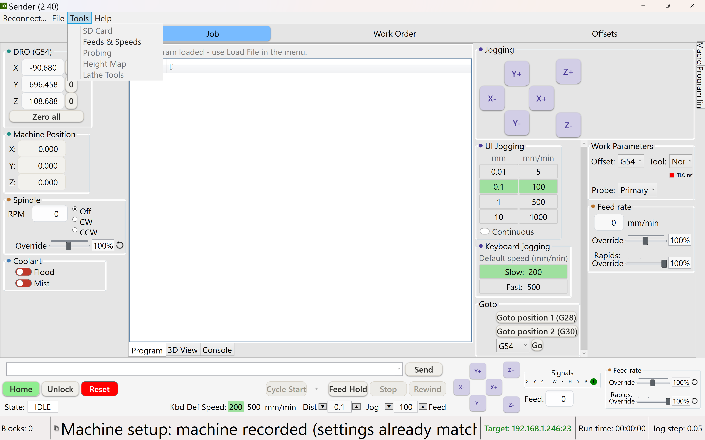
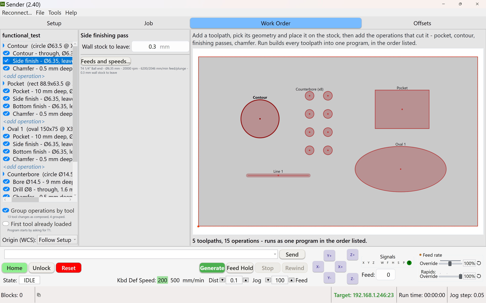
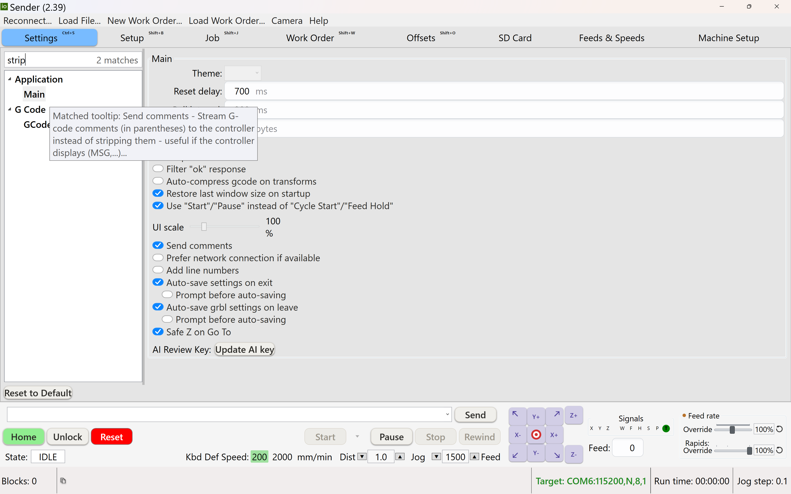
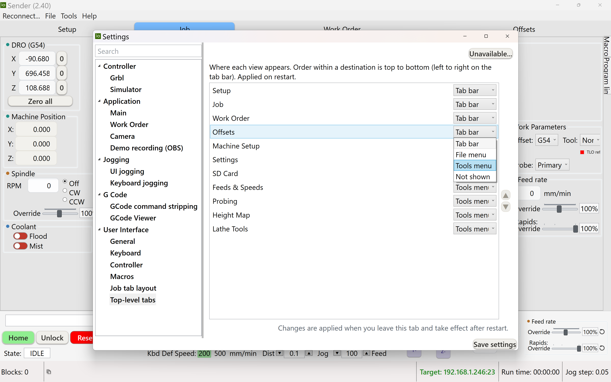

ioSender V2 User Manual
Everything you need to drive your grblHAL / Grbl machine with ioSender V2 — from first connection to squaring the gantry and running a job. Choose a reading track in the sidebar for a guided order, jump straight to a subject, or press F1 inside the app to land on the page for whatever you're looking at.
Intro to CNC — the big picture #
New to CNC? There's a lot to take in at once — motors, coordinates, probes, g-code, bits, tool changes. This page walks the whole picture once, in plain language, so the rest of the manual (and your machine) stops feeling like alphabet soup. Nothing here is ioSender-specific; it's the mental model every CNC user carries. Read it once, skim it later.
What a CNC actually is
A CNC (Computer Numerical Control) machine moves a spinning cutting tool through a piece of material along paths a computer controls, carving away material to leave the shape you want. It's subtractive: you start with a block or sheet of material — the stock — and remove everything that isn't the part. (A 3D printer is the opposite: it adds material.)
For hobby and small-shop work the common machine is a router or small mill: a motor called the spindle spins a cutting bit, and the machine moves that bit in three directions — the three axes:
- X — left/right, usually along the front beam.
- Y — front/back, along the length of the bed.
- Z — up/down (into and out of the material).
Bigger or fancier machines add a rotary A axis (a 4th axis that spins the stock), but X/Y/Z is the core.
Different shapes of machine
They mostly come in two layouts:
- Gantry router — a flat bed with a bridge (the gantry) that rides front-to-back and carries the spindle. Most hobby routers look like this; great for large flat sheets.
- Moving-table mill — the table slides under a fixed column. More rigid, better for metal, usually smaller work area.
ioSender drives both, plus lathes. The concepts below are the same either way.
Home, machine coordinates, and work coordinates
This is the concept that trips up every beginner, so it's worth getting straight:
- Homing. When you power on, the machine has no idea where it is. Homing drives each axis until it trips a switch at a known corner — that establishes the machine's home position. From then on the controller always knows where it is.
- Machine coordinates (MCS). A fixed grid pinned to the machine, with its origin at home. These never move. You rarely program in them directly — they're used for fixed spots like the tool-change position or a parking location.
- Work coordinates (WCS). Where your part is. You pick a
work origin — typically a corner of your stock and the top surface — and call it
0, 0, 0. Your program is written around that origin. grbl gives you several work coordinate systems (G54–G59.3) so you can store more than one setup.
The key insight: your CAM program is written around a work origin it can't know the real location of. "Zeroing" (usually with a probe) is how you tell the machine where that work origin sits in machine space. Do that well and the part lands exactly where you intend. See Work offsets and Setup.
Anatomy — the major components
Working from the frame up:
| Part | What it does |
|---|---|
| Bed & Y-axis rails | The base and the front-to-back travel the gantry rides on. |
| X beam / gantry | The bridge that moves along Y and carries the Z axis left-to-right. |
| Z carriage | Rides the gantry up and down; holds the spindle. |
| Spindle | Spins the cutting bit — a trim router or a proper VFD-driven spindle. |
| Spoilboard | A flat, sacrificial surface on the bed. You can cut slightly into it, screw workholding into it, and it gives a known flat reference (often surfaced flat by the machine itself). |
| Stepper motors | Turn electrical pulses into precise rotation. (Closed-loop steppers and servos add position feedback so they can't silently lose steps.) |
The motors' rotation is turned into straight-line motion by a drive mechanism, and the type tells you a lot about a machine's cost and precision:
| Drive | Character |
|---|---|
| V-wheels on extrusion | Cheap, light, easy — but the least rigid. Common on entry machines. |
| Linear rails / guides | Hardened rails with recirculating bearings: rigid and precise. |
| Rack & pinion | A gear on a toothed rack — good for long travels on big machines. |
| Lead screw / ball screw | A turning screw drives a nut. Precise; ball screws are low-friction and repeatable. Common on Z and on smaller machines. |
Probes — how the machine "feels" for position
A probe lets the machine touch something and record exactly where it was, instead of you eyeballing it. Four kinds you'll hear about:
| Probe | Used for |
|---|---|
| Touch plate | A conductive plate of known thickness. Touch the bit to it to set Z zero (and sometimes an XY corner). The cheapest option. |
| 3D probe (edge finder) | A spring-loaded stylus that trips when it touches in any direction. The workhorse: finds edges, corners and centres, and measures stock — used to set your work origin accurately. |
| Toolsetter | A fixed button at a known machine location. The tool touches it to measure its length — the key to painless tool changes (below). |
| Touch/edge combos | Many setups use a touch plate or a 3D probe for XY plus a toolsetter for tool length. |
Setup drives these routines for you.
The controller & the grbl language
The controller is the machine's brain — a small board (grblHAL on a Teensy or STM32, or classic Grbl on an Arduino) running firmware that speaks the grbl protocol. It:
- Reads g-code and generates the precise step pulses that move the motors.
- Watches the limit switches and probes.
- Stores its configuration in non-volatile memory (NVRAM) — numbered
settings like
$100(X steps/mm),$110(X max rate),$120(acceleration), homing and limits. These survive power-off. You read them with$$and change them like$100=80.000. ioSender's Settings tab is a friendly front end to all of them, so you rarely type raw$commands.
Command syntax comes in two flavours: g-code (G0/G1
moves, M3/M5 spindle, M8 coolant…) and grbl's system
commands ($$ dump settings, $H home, $X unlock, ? for
a live status report).
Almost nobody hand-writes more than a few lines of g-code — a quick jog, a facing pass, a one-off MDI command. The real program comes from CAD/CAM: you draw the part in CAD, generate toolpaths in CAM, and a post-processor spits out the g-code file for your machine. That file is what you load and run. You'll spend far more time in CAD/CAM than in g-code.
How a milling job flows
A CAM program is organised as operations, each producing toolpaths — the routes the bit follows (clear a pocket, cut a profile, face a surface, carve a relief). When the next operation needs a different bit, the program pauses for a tool change. So a typical job reads like:
rough pocket (¼″ end mill) → tool change → finish contour (⅛″ end mill) → tool change → V-carve detail (60° V-bit)
ioSender streams the file move-by-move, shows a live 3D view of the toolpath, and stops at each tool change so you (or an automatic changer) can swap bits.
Bits — the cutting tools
The bit shape decides what a cut can do:
| Bit | Good for |
|---|---|
| Flat / square end mill | General cutting, pockets, profiles, flat bottoms. |
| Ball nose | Rounded tip for smooth 3D contours and carving/finishing. |
| V-bit | Pointed — sign-making, V-carving lettering, chamfers. |
| Up-cut / down-cut / compression | Flute direction controls chips: up-cut clears chips upward, down-cut leaves a clean top edge, compression does both (great for sheet goods). |
| Surfacing / spoilboard bit | Big flat cutter for flattening the spoilboard or stock. |
Size matters too: diameter (⅛″, ¼″, 6 mm…) and flute length set how fine the detail and how deep the cut — small bits for detail, big bits for hogging material fast.
Why tool changes are the hard part
Every time you swap bits mid-job you risk introducing error, in two ways:
- Z reference moves. A new bit sits at a different length, so "where Z zero is" changes — you must re-establish it or the next cut is too deep or too shallow.
- XY origin can shift. Bump the stock or lose your zero and the whole part moves. Once you've cut some of it, that's usually a ruined workpiece.
Doing this by hand, mid-job, is exactly where beginners lose parts.
Tool change with just a touch plate
Pause → spindle stops → jog clear → swap the bit → set the touch plate on the stock top → jog the bit down until it touches → set Z zero from the plate thickness → remove the plate → resume. It works, but you re-zero Z against the stock surface every change (which may not be perfectly flat), and you must never nudge the XY origin. Lots of little chances to fat-finger it.
Tool change with a 3D probe + toolsetter (automatic)
The trick is measure once, reference forever:
- At the start you set the XY (and top-of-stock) work origin once with the 3D probe, and measure a reference tool length on the toolsetter.
- On every tool change the machine drives to the toolsetter — a fixed, known location — and measures the new bit's length automatically, computing the offset.
Because the toolsetter is at a fixed machine position, the stock origin is never re-touched after that first probe — only the tool length changes, and the machine handles that itself. No re-zeroing by hand, no chance to bump the XY origin. That is how automatic (and even semi-automatic) tool changing eliminates the human error: the risky step simply never happens again. Even if you swap the bit by hand, letting the toolsetter re-measure length keeps Z correct and XY untouched.
Setup sets the work origin with the probe, and the tool-change flow uses the toolsetter to re-measure length on each change — so multi-tool jobs stay accurate without re-zeroing.
What people actually make with a CNC
- Carvings, reliefs & lithophanes — ball-nose finishing of detailed 3D surfaces: signs, decorative panels, backlit lithophanes.
- Cutting complex shapes from sheet goods — profile-cut all the parts for a custom cabinet, puzzles, templates or enclosures out of plywood, MDF or acrylic in one job.
- Small metal parts — brackets, plates and enclosures machined from aluminium (with the right bits, feeds and a rigid enough machine).
- Engraving, PCB isolation, inlays and joinery — fine detail work where hand tools can't hold the tolerance.
That's the whole mental model. Now hit Getting started to meet the ioSender window, then Connect to your machine — the Novice track walks you through the rest in order (use the Next button below).
Getting started #
ioSender V2 is an all-in-one g-code sender for grblHAL and Grbl controllers. It streams your g-code to the machine and gives you everything around that job — connection, jogging, probing, work-offset setup, tool changes, machine commissioning and a live 3D view of the toolpath.
The main window at a glance
The tab strip across the top carries only what you need while a job runs. Everything else — commissioning, settings, probing, the hardware tuners — lives in the File and Tools menus and opens in its own window. Four tabs, left to right:
| Tab | What it's for |
|---|---|
| Setup | The front door: measure your stock, set the origin, and launch a job. |
| Job (the g-code screen) | Load/stream g-code, jog, DRO, feed/spindle overrides, the run bar. |
| Work Order | Compose a quick job (pockets, drills, contours…) without a CAM round-trip. |
| Offsets | The work-coordinate table — review, nudge and manage G54–G59.3. |
And the menu bar beside them:
| Menu | What's in it |
|---|---|
| Connect… | Not a menu but a command — opens the connection dialog. Reads Reconnect… once you're connected. |
| File | Load Program, Load / New Work Order, then the two configuration destinations: Machine (Machine Setup) and Settings. |
| Tools | Camera, SD Card, Feeds and Speeds, Probing, Height Map, Lathe Tools — plus the hardware-gated Tool table, Trinamic tuner and PID Tuner when your controller has them. |
| Help | Wiki, usage tips, a brief tour, video tutorials, error & alarm codes, and Support (check for updates, roll back a version, open the app data folder). |

Settings → User Interface → Top-level tabs lets you put any view where you want it — tab bar, File menu, Tools menu, or hidden. Prefer Probing as a tab? Put it back. See Where each view lives. And a keyboard shortcut names a view, not a place, so moving something never costs it its key.
Your first five minutes
- Connect to the controller (serial port or network).
- If it's a brand-new machine, run Machine Setup once (File → Machine).
- Learn to jog — move the machine safely by hand.
- Load some g-code on the Job tab, use Setup to probe your stock, or compose a quick job in Work Order.
- Know your errors & alarms for when something stops.
Click Novice in the sidebar and the topics reorder into a first-time-user reading path. Use the Next button at the foot of each page to walk it in order.
Connecting to your machine #
Open the connection dialog from the Connect… menu (it reads Reconnect… once you're connected — choosing it drops the current link so you can switch targets). The dialog has three tabs:

What you're looking at:
- Serial / Network / Simulator tabs — pick whichever matches how your controller is wired; only one is used at a time.
- Port — the COM port your controller shows up as (Windows assigns these; check Device Manager if you're not sure which one).
- Baud rate — the serial speed; must match your controller firmware's own setting (115200 is the near-universal grblHAL default).
- On connect — an optional action to run automatically the instant the link opens; "No action" just connects and stops there.
| Tab | Use when… | You enter |
|---|---|---|
| Serial | The controller is on a USB / COM port (most machines). | The COM port and baud rate. |
| Network | The controller has Ethernet / Wi-Fi (telnet or websocket). | host:port — a hostname or IP and port. |
| Simulator | You have no hardware and want to try the app, or test a job offline. | Nothing — ioSender starts and connects to a bundled grblHAL simulator. |
ioSender remembers your last successful target and can auto-reconnect if the connection drops mid-session. The current target is shown in the status bar.
What happens on connect
Once the link opens, ioSender runs a handshake with the controller: it reads the firmware build, the axis count, and the available options (probing, WCS rotation, plugins), then enables only the views that controller actually supports — a tab or a menu entry for something your board can't do simply isn't there. This is also when the option-matched simulator is selected, if you're running one.
Jogging & the DRO #
Jogging is moving the machine by hand — to reach a corner of your stock, line up a probe, or clear the bit away before a job. It's the first thing to get comfortable with, because everything else (probing, zeroing, tool changes) starts with putting the machine where you want it.
The DRO — reading position
The DRO (digital read-out) shows where each axis is, in two coordinate systems (see Intro → coordinates):
- Work position — relative to your work origin. This is what you usually
watch; it reads
0at the origin you set. - Machine position — relative to the machine's home corner. Fixed, set by homing.
The per-axis zero buttons set the work origin at the current spot — handy for quick manual setups (though probing is more repeatable, see Setup).
Two ways to jog
On-screen jog pad — arrow buttons for each axis, with:
- Distance presets (smallest → largest) — how far one press moves.
- Feed rate — how fast it jogs.
- Continuous — hold to move, release to stop, instead of a fixed step.
- Centre button (the bullseye in the middle of the pad) — rapid to the centre of the machine envelope at safe Z.
- Corner buttons (the four diagonals) — rapid to that corner of the machine envelope at safe Z, held back 20 mm from each limit so you never drive into a switch.
Centre and the four corners are the machine envelope — they don't follow the loaded program's bounding box. That way they mean the same thing whether or not a file is loaded.
If you'd rather have a plain arrow pad, untick Show go-to buttons on the jog pad in Settings → User Interface → General — the centre and four corner buttons disappear and the arrows stay exactly where they are.
Keyboard jogging — arrow keys for X/Y and Page Up/Down for Z. Hold a key for continuous motion; tap for a step. Holding Ctrl switches to a precise step jog of the distance shown as Jog step in the status bar.
Keyboard jogging works whenever the Job screen is active — even if focus has drifted to a side panel — but it's suppressed while you're typing in a text box (so you can enter numbers without the machine lurching).
Step vs continuous
Step moves an exact distance per press — use small steps for fine positioning near the work. Continuous covers ground quickly — use it for big moves, then switch to small steps to close in.
Always know where Z is. Raise Z before large X/Y moves so the bit clears clamps and stock, jog at a sensible feed near the work, and remember soft limits will stop a jog that would exceed travel (that's an alarm, not a fault).
ioSender can mirror your jog step/feed settings down to the controller's keypad settings (
$50–$55, from the grblHAL KEYPAD plugin) so a physical pendant jogs the same
way. Configure this under Settings → Jogging.Getting clean, repeatable results #
You can load a file and press Run — now you want parts that come out clean and the same every time. The gap between a rough, torn, or failed cut and a crisp one is almost never the machine; it's a handful of fundamentals. This page is the checklist that separates "it moved" from "it worked." The Intermediate track then walks the reference pages in the order you'd use them on a real job.
1. Workholding — the part must not move
If the stock shifts, the job is ruined, and it's the single most common cause of scrapped parts. Ways to hold work down:
- Clamps — low-profile or step clamps at the edges. Keep them out of the toolpath and preview in the 3D viewer to be sure.
- Screws into the spoilboard — through waste areas; rock-solid for sheet goods.
- Painter's tape + CA glue — tape both surfaces, superglue between: surprisingly strong, no clamps in the way, great for thin/small parts.
- Vise / fixture — for repeat parts and metal.
Hold down near where the cutting forces are, and remember climb cutting can pull the work — clamp against that pull.
2. Feeds & speeds — make chips, not dust
This is the concept that most changes your results. Four numbers interact:
| Term | What it is |
|---|---|
| Spindle speed (RPM) | How fast the bit turns. |
| Feed rate | How fast the bit moves through material (mm/min or in/min). |
| Chip load | Bite per tooth = feed ÷ (RPM × flutes). The number tooling charts quote. |
| Depth of cut (DOC) & stepover (WOC) | How deep each pass goes, and how much of the bit's width engages side-to-side. |
Too slow a feed makes the bit rub — heat, dull edges, burning in wood. Too fast snaps bits. The goal is well-formed chips, not fine dust or a screaming cut. Start from the tooling maker's chart or a feeds-and-speeds calculator, then trust your ears and eyes (below).
Roughing DOC ≈ ½–1× the bit diameter in wood (much less in aluminium); stepover ≈ 40–50% of diameter for roughing, 10–20% for a fine finish. Prefer a ramp or helical entry over plunging straight down.
3. Climb vs conventional, tabs & ramping
- Climb (cutter rotation matches feed direction) leaves a cleaner edge but pulls into the work — great on a rigid machine. Conventional is safer on lighter, flexier machines. Your CAM sets this per toolpath.
- Tabs — when cutting all the way through, leave small tabs (or an onion-skin) so parts don't shift or launch when they free.
- Ramp / lead-in — enter the cut gradually instead of stabbing down; easier on the bit and the finish.
4. Chip clearing & cooling
Recutting chips dulls bits and builds heat. Use a dust boot and vacuum for wood; an air blast or mist/coolant for metal. If a cut is smoking or the chips are brown, something's wrong — stop and check feeds/speeds.
5. A disciplined, repeatable origin
Repeatability comes from setting the work origin the same way every time. Probe it rather than
eyeballing, verify Z zero, and know exactly where 0, 0, 0 sits on your stock.
Setup exists to make this identical run to
run — that's what turns "it worked once" into "it works every time." See also
Work offsets.
Stock secured · correct bit, fully seated · origin probed & Z verified · safe Z retract height · spindle on & up to speed · dust/coolant running · toolpath previewed in the 3D viewer · feed-override and Stop within reach.
Your senses are a live feedback loop: a clean shearing sound and curled chips mean good feeds/speeds; a high whine and dust mean you're rubbing; chatter marks mean too much engagement or not enough rigidity. Adjust the feed-rate override on the fly and note what worked for next time.
Accuracy, calibration & repeatability #
This track is for when "close enough" isn't. You want the machine to land on a number — the part measures what the drawing says, and the tenth part matches the first. Getting there is a discipline: measure, calibrate in the right order, then verify. This page is the philosophy and the sequence; the Machinist track then takes you into the depth pages that do each step.
Three different things people call "accuracy"
| Term | Meaning |
|---|---|
| Accuracy | The machine lands on the correct absolute dimension (a 100 mm move is 100 mm). |
| Repeatability | It lands in the same place every time, even if that place is slightly off. |
| Resolution | The smallest step it can command. Fine resolution ≠ accurate — you can be precise and wrong. |
What steals accuracy
- Wrong steps/mm — every dimension scales off by the same %. Round holes, wrong size.
- Out-of-square axes / poor tram — rectangles come out as parallelograms; surfacing leaves scallops or a taper; diagonals don't match.
- Backlash — slop on a direction reversal; shows as doubled lines or undersized pockets.
- Lost steps — open-loop steppers stalling under load; the machine thinks it moved but didn't. (Closed-loop steppers/servos remove this failure mode.)
- Z reference drift & deflection — inconsistent tool-length referencing, or the machine flexing under cut.
Calibrate in this order
Each step assumes the previous one is done — calibrating out of order means re-doing work.
- Steps/mm (
$100–$102) — command a long known distance, measure the actual travel, correct the number. Do X, Y, Z. Machine Setup → 8 · Calibration → Stepper automates the whole thing by probing a reference block instead, so there's nothing to measure by hand. - Squaring & tramming — get the gantry square to the axes
(Machine Setup → 8 · Calibration → Squareness uses a
Phil Barrett offset on the ganged axis,
$170+), the spindle perpendicular to the bed (surface a test patch, read the scallops), and the frame square (measure the diagonals of a big rectangle). - Backlash — put a dial indicator on each axis, reverse direction, read the lost motion. Fix it mechanically (belt tension, anti-backlash nuts) — that beats software compensation.
- Homing repeatability — home several times and confirm it returns to the same machine position; set pull-off, homing feed/seek, and hard/soft limits in Settings.
- Tool-length strategy — a consistent reference (toolsetter) so a tool change doesn't move Z. Decide your master/reference tool. See Intro → tool changes.
- WCS discipline — use
G54–G59.3deliberately; set offsets withG10 L2/L20; keep anR0-before-G53habit; know at every line whether you're in machine or work space. Skew/rotation viaG10 L2 R(Setup uses this).
Then verify
Calibration isn't done until you've proved it: cut a test — a circle-diamond-square, a calibration cube, or a simple gauge — and measure it with calipers or an indicator. Adjust and repeat until the numbers match.
Closed-loop steppers and servos remove the "lost steps" failure mode, but they don't fix geometry — a machine that's out of square is out of square whether or not it can report position. You still calibrate.
The Job screen — running g-code #

What you're looking at:
- DRO (top left) — the live X/Y/Z position, with a per-axis zero button; see Jogging & the DRO.
- Machine Position — the same position in fixed machine coordinates rather than your work origin.
- Program limits — the loaded program's own footprint (min/max per axis), so you can sanity-check it fits your stock before running.
- Coolant — manual Flood/Mist toggles, independent of whatever the running program itself commands.
- The g-code list (centre) — the loaded program, line by line, with the current line highlighted as it runs. Hover any line for a plain-English tooltip explaining exactly what it does (shown here for
T1M6— "Select tool 1", then "Tool change (M6)", in the same left-to-right order the words appear in the line) — click the tooltip to copy the line. - Jogging / UI Jogging / Keyboard jogging (right) — the on-screen jog pad plus the distance/feed presets each jog step uses. The pad is the widest thing on that side; if the run bar's own compact jog controls are enough for you, untick Show the jog pad on the Job tab in Settings → User Interface → Job tab layout and the panels get that height back. Keyboard and game-controller jogging are unaffected either way.
- Work Parameters & Spindle — the active work offset and tool, and manual spindle RPM/direction/override controls.
- The fixture panel (far right, vertical) — quick-jump buttons to named machine positions like G28/G30/G54.
- The run bar (bottom) — Home/Unlock/Reset, the Run button and its mode dropdown, Feed Hold/Stop/Rewind, and the feed/rapids override sliders — see below.
The Job screen is where you load g-code, watch it, and run it. It's the home base you return to for every job.
Loading a program
- Load File... — open a single g-code file (
.nc,.gcode,.tap…) using the button on the program-view header (or drag-and-drop a file onto the list). - Load Folder... — open a whole folder of per-operation
.ncfiles (as a CAM post often produces) and combine them into one ordered program, using the program-view header button (or drag-and-drop a folder onto the list). - Work Order — press Run on the Work Order tab and the program it just compiled loads here as the real, active job — not a preview. Whatever was loaded before is restored once the run ends.
Large files and folders load on a background thread, so the window stays responsive while a big program parses. In ioSender a program is a program: whether it came from a file, a folder, or Work Order, it shows in the same g-code list, runs the same way, and updates the same live per-line status as it executes. The program-view header's title names what's loaded (a filename, or "Work Order" for a generated run).
The g-code list & the 3D view
The loaded program appears as a scrolling line list beside the live 3D viewer, which draws the whole toolpath and highlights progress as it runs.
The run bar
The main button is labelled Run, with a small dropdown beside it that picks which mode the next press starts in. Whichever mode you last picked becomes the button's own label, so the button always reads exactly what it's about to do:
| Mode | Does |
|---|---|
| Run | Start the loaded program for real — or resume after a feed hold. |
| Dry Run | Rehearse the program: Z stays offset clear of the stock, spindle/coolant are forced off, and tool changes are skipped — watch the whole toolpath run without cutting, spinning, or pausing for a tool swap. |
| Check Run | Starts the controller's own check mode ($C), which parses the program without moving anything, to validate it before a real run. $C isn't armed until you actually press Run — picking Check Run alone doesn't send anything. |
| Simulate | Temporarily switches to the bundled grblHAL simulator, runs the program there, then reconnects to your real controller once it finishes or is aborted — a way to preview a job with nothing connected, or with the machine unavailable. |
Whichever mode you ran reverts back to plain Run once the job ends, so the button never gets stuck offering to repeat a Dry Run/Check Run/Simulate pass by accident.
| Control | Does |
|---|---|
| Feed Hold | Pause: the machine decelerates smoothly and holds position (spindle keeps running). Run resumes. |
| Stop | End the run. |
| Reset | Soft-reset the controller — stops motion, clears an alarm, and returns to a known idle state. |
| Optional stop | Honour M1 optional-stop pauses in the program. |
Feed Hold is a graceful, resumable pause — use it first. Reset is the hard stop that also clears alarms but ends the job. Keep a hand near Feed Hold / Stop whenever you start a cut, and near the physical E-Stop for a true emergency.
Overrides
Tune a running job without editing the g-code: adjust Feed rate, Rapids and Spindle live (with a reset-to-default), and watch the run time. Overrides are how you dial in feeds by ear on the fly — see reading the cut.
The run bar's Feed: readout drops the mm/min · in/min label — on that bar the room is better spent on digits — and states the unit in its tooltip instead. The full Feed rate panel still shows its unit inline, and both readouts now grow to fit a five-digit rate rather than clipping it.
Start from a toolpath
If you need to restart partway through — after a broken bit or a stopped job — you can begin from a chosen point rather than the top, with a safe Z-up move first. Pick the point in the 3D viewer.
Right-click → Transform in the program list can rotate the program, convert arcs to lines, add drag-knife moves and more before you run — handy for fitting a job to your stock orientation.
Double-click the Console tab to pop it out into its own floating window — handy for watching traffic on a second monitor while you work the Job screen. F12 toggles the console from anywhere; rebind it under Settings → User Interface → Keyboard if you'd rather use something else.
Setup — measure stock & set the origin #
Setup (formerly called "Start Job") is the guided front door to running a part. Instead of jogging around and zeroing by eye, you let the machine probe your stock: it finds the real size and position, optionally corrects for how the stock sits skewed on the table, sets the work origin, and takes a tool-length reference.
Setup is a single, shared fact about the machine — not something you redo per program. It's the same
tab and the same saved state whether you go on to run a loaded .nc file from the
Job tab or a program you compose in Work Order; there's no
separate "setup" step duplicated inside Work Order. Run Setup once, then use either.

What you're looking at:
- Setup (top group) — pick the physical Fixture you clamped the stock against (defined in Machine Setup's Fixture definitions, or the built-in Dynamic fixture below) and which Probe to use — a 3D probe, or a Touch Plate (electrical continuity). Safe Z delta sets how high the probe retracts between touches.
- Geometry — only shown when the Dynamic fixture is picked: choose External/Internal and Is Circle with clickable corner/edge/centre picker grids, so a one-off feature that doesn't have a saved fixture position can still be set up here without leaving the tab.

- Stock — the nominal Width/Height/Thickness you already know (from your CAM file or a tape measure); tick Stock size is exact only if you trust those numbers precisely, since it changes how aggressively the probe searches for the real edge. A Material picker here also drives probing rules (see the conductive-stock callout below) and feeds the chipload-based feeds/speeds advisor used elsewhere (e.g. Work Order).
- Actions — Set origin or offset picks the destination: any work-coordinate slot G54–G59, or G92 for a temporary offset; Set tool-length reference also probes the current tool's length at the same time; Measure stock size probes all four corners; Probe height map (once stock is measured) probes a grid over the stock and applies the resulting surface compensation to the run; Set work rotation from skew applies the measured skew as a work-coordinate rotation.
- Measured stock / Flatness / Squareness — filled in once you've run a probe: the real measured size, how flat the top is, and how far off-square (skewed) the stock actually sits.
- The Stock diagram (right) — a live schematic of the four probed corners, with each corner's angle and Z height plus the diagonal measurements, so you can see at a glance how square and flat the material really is.
- Copy size / Verify skew — copy the measured size back into the nominal fields, or re-touch two corners to double-check the computed rotation.
- The green Generate/Run button at the bottom of the window builds (then runs) the job once you're happy with the setup.
The steps
- Stock — enter your nominal stock size, or let the probe measure it.
- Measure stock size (probe all 4 corners) — the machine touches each corner so it knows the true X/Y extent and where the stock actually is.
- Set work rotation from skew — if the stock isn't perfectly square to the axes, ioSender computes the small rotation and applies it as a work-coordinate rotation, so you don't have to dial the material in by hand.
- Set tool-length reference — probes the tool so Z is referenced correctly.
- Set origin in — choose which corner (or centre) of the stock the g-code origin sits at, then press Generate on the run bar at the bottom of the window (the shared Run button reads "Generate" while this tab is focused and nothing's built yet).
Verify skew re-touches the two back corners to double-check the rotation it measured before you commit to cutting.
A Touch Plate probe reads electrical continuity, so it needs a conductive path. ioSender reads conductivity from the Material you picked in Stock (aluminium/brass/steel are conductive; wood-based materials aren't) rather than a separate checkbox. Probing a Dynamic Internal/Is-Circle feature on non-conductive stock with a Touch Plate shows a warning rather than a hard block — a custom-shaped touch plate can still reach those points.
Picking a Touch Plate always applies its thickness and lip offsets, whatever the stock is made of. That's the right test, because the probe circuit closes between the bit and the plate — both metal — and never through the material underneath. So probing conductive stock with a plate (thin aluminium sheet, say, too thin for a reliable direct stylus touch) is an ordinary workflow and compensates correctly. Stock conductivity only drives the reliability warning above.
Setup writes a controller-side
start_job.macro and performs an automatic 3D (or touch
plate) probe as part of the sequence. It must land on the Job tab to bootstrap the controller
handshake. The work rotation uses grblHAL's G10 L2 R — measured skew is applied
as its negative. There's no completion gate: nothing hides other tabs until Setup has "provably" run —
Generate simply asks, once, whether to proceed on the currently cached origin and tool-length
reference.Work Order — build a job without a CAM round-trip #
Work Order is a top-level tab for jobs that don't deserve a trip out to CAD/CAM and back — drill a hole, cut a pocket, chamfer an edge, two minutes at the machine instead of a design session. You describe the job as a tree of toolpaths and operations; ioSender compiles it into an ordinary g-code program and runs it exactly like a loaded file.

What you're looking at:
- Toolpaths — the geometry: line, circle, oval, square, rectangle or surface. Add one, then hang operations underneath it: pocket, contour, drill, bore, side finish, bottom finish, chamfer. Geometry belongs to the toolpath; the operations act on it — that's why a counterbore is just one circle carrying a shallow bore, a through drill and a chamfer on the same centreline, rather than a special case.
- Enable checkboxes per row — untick a toolpath or operation to leave it out of the next Generate; ticking/unticking a toolpath cascades to its operations, and back.
- Feeds and speeds — a dialog proposes chipload-based feed/speed/depth-of-cut numbers per tool and the Material picked in Setup's Stock group, and remembers what you actually used last. Each operation also has a per-row Climb/Conventional cut direction (defaulting to Conventional) — climb orbits the same direction as the spindle for an internal feature (a bore/pocket) but the opposite direction for an external one (a contour cutting a part free), and ioSender works out the correct raw winding for you rather than you having to reason about CW/CCW by hand.
- Generate — compiles every enabled row into one g-code program, not a pile of separate files. Tool order is chosen, not stumbled into: each candidate ordering is scored by simulating it to completion, so a job with many sections and only a few distinct tools still does the minimum number of real tool changes — the compiler tracks what's already in the spindle rather than revisiting a tool because of where it happened to sit in the tree.
- Run — sends the generated program to the Job tab as the actual loaded job (see below), then streams it through the normal run pipeline.

Running a Work Order
Pressing Run switches you to the Job tab and loads the generated
program into its real, docked program list — the same list a loaded .nc file uses, not a
separate floating preview, with the same live per-line status (ok/*) as any
other run. When the run ends — completes, is stopped, or a prerequisite check fails — ioSender switches
you back to Work Order and restores whatever program was loaded before the run, so re-running the Work
Order never clobbers a file you had open.
Surfacing the spoilboard
Flattening the spoilboard is a Surface toolpath like any other operation — same tool list, same feeds & speeds advisor, same generate/run path, same dry run. Tick Entire Spoilboard and it covers the whole bed.
It deliberately does not trust the work order's coordinate system: it touches off its own fresh Z0 and works in machine coordinates, because the whole point of resurfacing is that the board is not where you last thought it was. It borrows a scratch WCS slot and restores it afterwards, so establishing that temporary origin never steps on your real one.
Which coordinate system it runs in
A work order carries its own WCS field. Leave it on Follow Setup and
it resolves live at Generate time to whatever Setup is currently targeting; or pin it
to a specific G54–G59 if this job always belongs to one fixture. Pinning matters
because Setup is shared with a plain loaded file — its live selection isn't something a work order saved
weeks ago can treat as a stable reference.
Your own tools
The tool list isn't fixed. Add your own cutters alongside the built-ins from the Feeds & Speeds dialog's tool editor — an added tool behaves identically to a built-in one, including in the advisor and the tool-ordering pass. Operations record the tool by name, so a saved work order stays readable, and reconciles itself on load if the list has changed underneath it rather than silently binding to the wrong cutter.
Work Order doesn't have its own separate stock-setup step. It uses the same Setup tab and cached origin/tool-length reference as everything else. Generate asks once — proceed on the currently cached Setup? — rather than gating the tab behind a certified "Setup complete" state.
Tool numbers are preassigned from the Feeds & Speeds tool list position. If your machine's ATC macros reserve a tool number for a fixed sentinel (for example, a 3D probe already fitted to the spindle), that number is skipped in the Work Order's own numbering — check your macro setup before assuming T-numbers line up 1:1 with the tool list.
Running a work order in Dry Run neutralizes the spindle, the same as dry-running a loaded file. (It didn't always — a work order used to bypass that and could fire the spindle for real.)
Machine Setup — commissioning a new controller #

What you're looking at:
- The numbered steps down the left (1–9, plus Overview) are the guided sequence — work top to bottom; nothing is sent to the controller until you press Apply. It's the same searchable navigation tree as Settings, and each step carries a status dot — green done, orange needs attention, red not set — so you can see at a glance what's left.
- Start from your machine — three dropdowns let you pick a known manufacturer/product/model (or Generic/custom) so the later steps start from sensible defaults instead of blank fields.
- Firmware / Build — shows what's actually running on the connected controller right now; Check for Updates compares it against the latest published grblHAL build.
- Check for Updates compares the running build against the latest published grblHAL build — here it reports Up to date. When a newer build does exist you get a Firmware update available prompt instead, and Flash Firmware reprograms the board (this disconnects ioSender and needs the board's own RESET/PROGRAM button pressed within the time shown).
- Firmware information (the
$Iwindow shown here) — a read-only dump of the controller's reported firmware, version, build, axis count and enabled options — handy when reporting a problem. - Forget machine / Reload / Preview / Apply (bottom right) — Apply is the only button that actually writes settings to the controller; Preview lets you review the resulting
$settings first.
Machine Setup — opened from File → Machine, in its own window — is a
guided wizard that walks you through the settings a new machine needs before it can safely home and run —
in plain-English steps instead of a wall of $ numbers. Do it once when you first connect a controller (and again after a firmware
reset). It writes real grbl settings to the controller's NVRAM, so it's how
you turn a blank board into your machine.
If setup isn't finished, ioSender opens straight on the first incomplete step — so you can't accidentally try to run a half-configured machine. Once all the steps are done, it stops nagging.
The nine steps
An Overview page lists them; each is a numbered entry in the tree that you complete in order.
| Step | What you set | grbl settings |
|---|---|---|
| 1 · Machine | Start from your machine — pick your machine so the later steps begin from sensible defaults instead of blanks. | — |
| 2 · Home position | The corner your machine homes to (front-left / front-right / back-left / back-right). Must match where your limit switches actually are — this is also machine origin. | $23 |
| 3 · Axis information | Per axis: travel, max rate, steps/mm, invert direction, limit-switch type and home direction. A Live column shows the controller's current value as you edit. | $3 $5 $23 $1nn |
| 4 · Homing & limits | Enable limit switches, homing, force-origin and soft limits; set pull-off, locate/seek feed rates and debounce. | $27 $24 $25 $26 |
| 5 · Probe definitions | Declare the probes fitted to this machine (touch plate / 3D probe / toolsetter) so probing and Setup know what's available. | — |
| 6 · Fixture definitions | Define your own named workholding fixtures (a specific vise, fence, dog-hole grid…) that Setup can pick from, with a captured machine-coordinate reference position. | — |
| 7 · Controller macros | Install the controller-side macro set onto the controller's storage (e.g. Install ATC macros…). This step queries the controller to show what's installed or outdated. | — |
| 8 · Calibration | Two sub-pages. Stepper corrects steps/mm without any manual measuring: for X/Y it probes a reference block of known size against a validated Corner Fence; for Z it probes a 1-2-3 gauge block's top in each of its three known orientations and least-squares fits a new Z steps/mm from all three readings. Squareness checks and corrects gantry squareness on a ganged (dual-motor) axis. Only the ganged axis is writable and the offset is a fine trim. | $100–$102 $170+ |
| 9 · Build simulator | Build a grblHAL simulator matching this machine's axes, probe and options — detected automatically, no picks needed — so you can test jobs offline (see Connect). | — |
Why the order matters
The steps build on each other: you can't set useful soft limits (step 4) until the machine knows its travel and homing direction (steps 2–3); probing routines (step 5) need the axes configured; the macros (step 7) assume a working, homeable machine; and calibration (step 8) probes a fixture you defined in step 6 with a probe you declared in step 5. Working top-to-bottom once gets you to a machine that homes, respects its own limits, probes, and measures true.
Defining a fixture (step 6)
A fixture is a named piece of workholding — a specific vise, a corner fence, a dog-hole grid — plus a captured machine-coordinate reference position that Setup can probe against. The edit dialog is deliberately non-modal so the jog pad stays live while you're defining one:
- Set position captures wherever the machine currently is as the fixture's reference.
- Test rapids to the saved position and probes it. If you've since jogged somewhere noticeably different, it asks first and defaults to adopting where the machine actually is — otherwise pressing Test would silently undo your jog and re-run the identical failing probe. Nothing moves until you answer.
- The 3D Probe / Touch Plate choice is remembered per fixture. A touch-plate fixture reopens as a touch-plate fixture, so the next Set/Test can't quietly run with 3D-probe geometry and drop the plate thickness and lip offset. A brand-new fixture defaults by which probes you actually declared in step 5.
The recovery prompt tells you what went wrong and points you at Test. Jog closer to the feature, then press Test — it will offer to adopt the new position and probe from there.
Stepper calibration and squareness used to be standalone wizards on the Tools tab, disconnected from the rest of commissioning. They're steps in this sequence instead — same guided order as homing, soft limits and the TLO reference — so a machine gets set up in one pass. See Accuracy & calibration for what the numbers mean.
Steps 2–4 describe physical reality — which corner homes, how far each axis travels, your drive type and switch wiring. If you're unsure, your machine's build documentation or the maker's default profile is the source of truth. Getting
$23 (home direction) or the limit-switch type wrong will make
homing drive the wrong way or fault.Machine Setup gets you safe and running. The Settings tab then exposes every
$ setting for fine-tuning, and Accuracy &
calibration covers dialing in steps/mm and squareness to a real dimension.Tools — the hardware-gated extras #
Three utilities depend on what your controller supports rather than on how you work. Each is its own entry at the bottom of the Tools menu, and each appears only when the connected board has the thing it tunes:
| Tools menu entry | What it does | Only if… |
|---|---|---|
| Tool table | Define your tools (number, diameter, length) so tool changes and offsets know each bit. | the firmware was built with a tool table (N_TOOLS non-zero) |
| Trinamic tuner | Tune Trinamic stepper drivers (current, StallGuard). | the board has TMC drivers |
| PID Tuner | Tune closed-loop / spindle PID. | the controller exposes a PID log |
On a hobby machine the common case is that your controller has none of the three, so none of them are listed — there is nothing to look for. There is no longer a "Tools" tab wrapping them: the wrapper is gone and the three tools stand on their own, so a board with just one of them shows just that one. Like any view, each can be moved onto the tab bar from Settings → User Interface → Top-level tabs.
Where the rest of it went
There used to be a Tools tab, a catch-all for machine utilities. Everything that wasn't hardware-gated has moved to where it's actually used, the standalone wizards were deleted rather than kept in two places, and what remained no longer needed a tab of its own:
| Used to be here | Now |
|---|---|
| Surface Spoilboard | A Surface toolpath in Work Order — same tool list, same feeds & speeds advisor, same generate/run path and dry run as any other operation. Its Entire Spoilboard mode is a checkbox on the toolpath. |
| Stepper calibration (manual / scratch / probe) | Machine Setup → 8 · Calibration → Stepper. The manual and scratch methods are gone; the probe method is the one that survived. |
| Auto Square | Machine Setup → 8 · Calibration → Squareness. |
Work offsets (WCS) #

What you're looking at:
- Each row is one work-coordinate system (
G54–G59.3) or a system offset (G28,G30,G92) — your program runs in whichever one is currently active. - X / Y / Z columns are directly editable — type a value, then click elsewhere to leave the row and commit a plain
G54–G59.3change automatically. - Clr clears that one offset to zero immediately; Get copies the current machine position into the row's fields (still needs you to click away to commit it).
G28/G30/G92rows ask for confirmation before saving, since they store wherever the machine physically is right now rather than a typed number.- The explanatory panel (right) documents this machine's own convention for what
G30/G59.3are used for — worth reading, since these are just storage slots without a fixed meaning of their own.
A work offset is the stored gap between the machine's home and a work origin (see the
Intro diagram). grbl keeps several of them so you can have more than one setup
ready at once — the work coordinate systems G54 through G59.3.
Your program runs in whichever one is active (G54 by default).
The Offsets tab
It's an inline-editable grid, one row per offset (G54–G59.3 plus the system
offsets G28, G30 and G92). Every row edits and acts on itself —
there's no separate staging panel:
- Type directly into a row's X/Y/Z fields, then click elsewhere to leave the row —
a plain
G54–G59.3row saves automatically the moment focus leaves it. - Get — copy the current machine position into that row's fields (not written to the controller yet — still click away to commit it).
- Clr — clear that one offset (every axis to 0) immediately.
A changed-but-uncommitted value shows bold orange; a value that differs from what it was at startup shows blue — the same change-tracking convention as the Grbl settings tree. Right-click a row for Restore to value at startup.
The Go To actions (including a
G30 park) are machine-coordinate
moves, so they're only as trustworthy as the machine-coordinate reference — and ioSender now refuses to
run one on an unhomed machine. This isn't theoretical: after an unexpected controller reboot grblHAL
came back reporting Idle, not Alarm, with MPos:0,0,0 at wherever the tool happened
to be sitting. A G30 then chased its stored coordinates as a blind displacement from that
false zero and rapided into the hard stops. Soft limits are no backstop here — they're only enforced
once homed. Home first.Because these three store wherever the machine currently is rather than a typed target (no rapid move is ever issued), editing their row asks for confirmation before committing — click Get, then leave the row, to record today's position into one of them.
Most of the time you don't edit these by hand: Setup populates the active WCS for you when you zero on your stock. The Offsets tab is for reviewing them, nudging a value, or setting up a second fixture.
Under the hood, offsets are set with
G10 L2 (define a WCS in absolute machine
coordinates) or G10 L20 (define it so the current position equals given work
coordinates — what "zero here" does). A work rotation for skewed stock uses G10 L2 R.
Keep an R0-before-G53 habit so a leftover rotation never contaminates a
machine-coordinate move. See Accuracy & calibration → WCS discipline.Settings — grbl & app #

What you're looking at:
- The navigation tree (left) lists every settings page grouped into five categories. Pick a page; it opens on the right. There are no tab strips.
- The Search box above the tree filters it live and reports a match count. It searches the words on each page, not just page names — "backlash" finds Axis information, "OBS" finds Demo recording.
- The page area (right) shows one config panel at a time, with room to breathe — panels are no longer crammed two or three to a column.
- Save / Restart / Reset to Default (bottom) is a shared footer; which buttons appear depends on the page (Reset only shows where the page actually has resettable settings).
- On the Grbl page specifically, the footer gains Reload / Backup / Restore / Copy to simulator — Backup/Restore snapshot and roll back a whole settings set; Copy to simulator pushes the same settings into the bundled offline simulator so it matches your real machine.
Settings — opened from File → Settings, in its own window — holds the controller's settings plus ioSender's own preferences, in one place. They're organised as a tree of five categories:
| Category | Pages |
|---|---|
| Controller | Grbl — every $ setting the controller has, with its own group tree and $-search (see below). Simulator — build and manage the bundled option-matched grblHAL simulator (see Connect and Machine Setup), also reachable at startup via the -simulator command-line flag. |
| Application | One page per panel — Main is how ioSender talks to the controller (reset delay, poll interval, buffer size and aggressive buffering, comment/line-number handling, prefer-network-if-available, and the grbl auto-save pair), plus Work Order, Camera and Demo recording (OBS). How the app itself looks and behaves is not here — that's User Interface → General, below. |
| Jogging | UI jogging and Keyboard jogging — jog steps and feeds for each, and mirroring them to the controller's firmware jog ($5x). See Jogging. |
| G Code | GCode command stripping (what gets filtered on the way out) and GCode Viewer (how the 3D view draws it). |
| User Interface | General — how the app itself looks and behaves: keep MDI focus, restore the last window size, friendly Start/Pause run-bar labels, UI scale, the go-to buttons on the jog pad, and the app's own auto-save / prompt-before-saving pair. Then Keyboard and Controller (game-controller bindings), Macros, Job tab layout, and Top-level tabs. |

A lot of ioSender's useful text lives in tooltips, so search will sometimes land you on a page where nothing visible matches what you typed — exactly what Main does in the shot above. Hover the matched entry's label in the tree and it tells you why it matched: Matched text: … or Matched tooltip: …, quoting the words it hit and, for a tooltip, naming the control they belong to. So the answer isn't just "it's on this page somewhere" — it's "hover Send comments". A correct match never has to read as a wrong one.
Inside the Grbl page you still get the familiar group tree and
$-search —
a wildcard like $39* or free text like "jog", with next/previous match arrows, change
highlighting for settings altered since startup, and right-click to revert one. That's deliberately
not lifted into the navigation tree: those are live controller settings, fetched on connect and
absent entirely on classic grbl, so the tree would change shape whenever the machine connected.Machine Setup is the guided subset that gets a new machine running; the Grbl page here is the full list for fine-tuning. It also keeps backups / restore points, and the auto-save / prompt-on-save options control whether changes are written to the controller immediately or after confirmation.
The Camera menu only appears once a device is bound: go to Settings → Application → Camera, pick a device from the dropdown and Connect.
A keyboard shortcut names a view, not a place. Bind a key to Probing and it works whether Probing is a tab on the bar or an entry in the Tools menu — the same key shows it either way, so moving a view around never costs you its shortcut.
Where each view lives
Settings → User Interface → Top-level tabs lists every view with a destination beside it: Tab bar, File menu, Tools menu, or Not shown. The main bar ships cut back to what you need while a job runs, with the rest in the menus — but that's only a default. Put Probing back on the bar, move Offsets into a menu, hide what you never touch. The ▲▼ buttons set the order within whichever destination a view is assigned to (left to right on the bar, top to bottom in a menu). Changes apply on restart.
Settings, Machine Setup and Job can be moved between the bar and a menu but not hidden — ioSender puts them back rather than let a layout lock you out.

Binding a key to a tab or menu entry
Settings → User Interface → Keyboard has one group, Top Level Tabs, holding every top-level destination: the views (Job, Setup, Offsets, Probing, Settings, Machine Setup, the tool and tuner windows…) and the main-menu commands that aren't views (Connect, Load Program, Load/New Work Order, Camera, and the Help entries). All start unbound. Sub-pages within a view — a particular Settings page or Machine Setup step — are deliberately not bindable; shortcuts address top-level destinations only.
A shortcut for a menu command is refused whenever that entry is greyed out, so a key can never do something the menu itself is currently refusing.
Keeping ioSender up to date
Help → Support → Check for updates... checks GitHub for a newer released version and walks you through installing it (on a dev build, it instead offers a dropdown of every published release to switch to). If an update is found in the background, the window's title bar quietly appends "(update available)" as a hint, without interrupting anything. Roll back to previous version... swaps back to the build installed before your last update — it only remembers one step back, so it won't work if you haven't updated at least once yet.
Feeds & Speeds (Fusion 360 Addin) #

What you're looking at:
- Ask AI to review / model dropdown — sends every operation to the picked AI model for a second opinion; nothing is applied automatically.
- The grid — one row per operation and parameter (RPM, feeds, step-overs); Current is what Fusion exported, Recommended is the table's own chip-load-based number, Machine limit is your connected controller's actual ceiling, and Verdict flags whether it's fine (Ok), worth a small correction (Nudge), or should Change.
- AI Says / Prefer AI — once a review runs, the AI's own opinion appears per row; tick Prefer AI (or "for all") to use its number instead of the table's.
- Write apply file — saves only the flagged rows to a companion file Fusion reads back in.
- The status log (bottom) is a running transcript of the review — including cost/token counts. This particular capture shows a review being cancelled partway through (Esc/Ctrl+C), which is why it reads "Cancelling…" / "AI review cancelled".
The ioSenderV2 Fusion Addin adds an "ioSenderV2" panel to Fusion 360's Manufacture workspace with Feeds and Speeds and Batch Post Process commands. The matching Tools → Feeds and Speeds view in ioSender reviews what Fusion exports against a material chip-load/surface-speed table and your connected controller's actual machine limits, before you post any g-code — no controller connection required, it works entirely offline against the export file.
First-time setup
- In ioSender: Help → Support → Install ioSenderV2 Fusion Addin... (only shown when Fusion 360 is installed for this user) — symlinks the add-in into Fusion's AddIns folder, so future ioSenderV2 updates need no reinstall.
- In Fusion: Utilities → ADD-INS → Scripts and Add-Ins → Add-Ins tab, select ioSenderV2, click Run (tick Run on Startup so it's always available).
Workflow
- In Fusion's Manufacture workspace, run the ioSenderV2 panel's
Feeds and Speeds command — it exports the current setups/operations automatically
(to
~/Downloads/ioSenderV2/<docName>.json) and leaves its dialog open. - Switch to ioSender's Feeds & Speeds tab, Load / Import
sub-tab, click Load latest export. Pick a Material — the default,
Derived, reads each setup's own material from its name (a prefix like
MDF_...orMaple_...); choosing a specific material instead overrides every operation to that one material regardless of setup name. - A successful load jumps straight to the Results tab: one row per operation and
parameter (RPM, cutting feed, plunge feed, axial step, radial step), each showing Current,
Recommended, Machine limit (cross-checked against the connected
controller's
$30max RPM and$110-$112max feed rates) and a Verdict (Change / Nudge / Ok). - Optional: Ask AI to review (only shown once an AI review key is set — Settings → App → AI Review Key) sends every operation to the selected model for a second opinion, filling in an AI Says column and a running cost/token estimate. It never applies anything by itself — tick Prefer AI on a row (or Prefer AI for all) to use its number instead of the table's when you write the apply file.
- Click Write apply file — writes a companion
-apply.jsonnext to the export containing only the rows flagged Change (or explicitly Prefer-AI-overridden), and archives a copy of both files under the app's logs folder (Fusion deletes its own copies once its dialog closes, so this is the only lasting record of what changed). - Back in Fusion — with the Feeds and Speeds dialog still open — choose Action → Apply (or press OK) to pull the changes into your operations.
- Use the ioSenderV2 panel's Batch Post Process command to post multiple
setups/operations to g-code files in one action — handy after duplicating a setup for a second
material (e.g. a
Maple_setup copied toMDF_) once its feeds and speeds have been recalculated.
Chip-load and surface-speed reference values per material come from published carbide bit charts (Onsrud/Amana/Vortex-style starting points), then clamped to what your connected controller can actually do. The optional AI pass is a second opinion for you to read, not a replacement for the table.
SD card jobs #

What you're looking at:
- The file list shows what's actually stored on the controller's own SD card / flash (not your PC) — Size and Location (e.g. FatFs vs littlefs) columns show where each file physically lives on the controller.
- List CNC files only filters out non-g-code files (like the
.macrofiles shown here) from the view. - Upload copies a file from your PC onto the card; Install ATC macros pushes the controller-side macro set (the same one Machine Setup step 7 installs).
- Selecting a file (not shown open here) offers Load and run / Edit / View / Delete / Move / Copy.
Many controllers have an SD card (or onboard flash) that stores g-code files on the controller itself. Tools → SD Card manages those files and can run them directly.
- Upload / From file — copy a local g-code file onto the card.
- Load and run — run a file straight from the card: the controller streams it itself, so the job keeps going even if the USB link or ioSender hiccups. Great for long jobs.
- Manage — Create, Edit, View, Delete, Move and Copy files; a List CNC files only filter; and an Enable rewind option.
The controller-side macro set (e.g. Install ATC macros) lives on this storage too — the same set Machine Setup step 7 installs.
The 3D g-code viewer #

What you're looking at:
- The 3D pane itself sits between the DRO panel and the jogging controls on the Job screen (see The Job screen) — this shot shows it mid-program, with the toolpath already carved into the stock model.
- Play / Pause / Stop and the speed dropdown (1x) play back the toolpath animation at the chosen speed without actually running the machine.
- Reset view snaps the camera back to fit the whole scene; the small cube gizmo in the bottom-right corner (the ViewCube) can be clicked to snap to a specific face.
- The orange cylinder is the cutting tool's current position; the brown block is the stock, shown at its real probed size.
The 3D viewer sits beside the g-code list on the Job screen and draws the entire toolpath before you cut — so you can sanity-check a program, see where it sits on your stock, and watch progress as it runs.
Getting around
- Drag to rotate, scroll to zoom, and use the ViewCube to snap to a face.
- Reset view (Ctrl+V) re-fits the machine/program; Save view stores the current angle as your default.
What you can show
Toggle the grid (Ctrl+G), X/Y/Z axis markers, the work envelope (your machine's travel), the program's bounding box, the coordinate system and a text overlay. Colours for cuts, rapids, retracts and the highlight are all configurable, and Highlight completed cuts shows how far a running job has got.
Hold Ctrl and click a point in the view to jog there — the machine raises Z to a safe height first, then rapids to the spot. A fast way to reach a feature without nudging with the jog keys.
You can also start a job from a chosen toolpath here — pick the point to resume from (see the Job screen).
Lathe mode & wizards #

What you're looking at:
- Profile — a saved set of defaults for this wizard (bit geometry, preferred depths) so you don't re-enter them every time.
- Start Z / Length / Diameter (Current/Target/Clearance) — the geometry of the cut: where it begins, how far along Z it runs, and the diameter it starts and ends at.
- Cut depths and feed rates — per-pass depth and feed for the roughing passes, plus a separate, lighter Last pass for the final finish pass.
- CSS (Constant Surface Speed) — holds a constant cutting speed at the tool tip by varying spindle RPM as the diameter changes, instead of a fixed RPM.
- Calculate generates the actual turning program from these numbers, ready to load and run like any other g-code.
ioSender also drives lathes. There is no app switch to throw: lathe mode follows the
controller — a firmware built with lathe support reports it (LATHE in its
$I options) and the interface switches to a lathe layout, with X as the diameter/radius axis
and Z running along the spindle. The wizards live at Tools → Lathe Tools.
The wizards
Rather than hand-writing turning g-code, fill in dimensions and let a wizard generate the program:
| Wizard | Operation |
|---|---|
| Turning | Reduce diameter along a length. |
| Facing | Clean up the end of the stock. |
| Parting | Cut the finished part off. |
| Threading | Cut a thread. |
Each produces a normal program that loads and runs on the Job screen like any other.
Errors & alarms #

What you're looking at:
- Two tabs — Error codes and Alarm codes — each a plain-English lookup table for every numbered code the controller can report.
- Find the code shown on your Job screen's status line in this list to see exactly what it means (and, for alarms, what usually causes it).
- This reference opens from the Help menu any time, even without a job running — handy to have open the first few times you hit an alarm.
Sooner or later the machine stops and shows a code. Don't panic — grbl is just telling you what happened. There are two kinds, and they mean very different things.
An error rejects a single command and tells you why (bad g-code, a setting that isn't allowed right now). The machine keeps its state; fix the command and carry on.
An alarm means something unsafe happened — the machine locks out motion until you deliberately clear it. Position may no longer be trusted.
Clearing an alarm
- Soft-reset (the Reset button) to stop and acknowledge.
- Unlock with
$Xonly once you've checked it's safe to move. - Home (
$H) to re-establish position — the proper way to recover after a limit trip or a reset during motion.
Common alarms
| Alarm | Meaning & usual cause |
|---|---|
| 1 | Hard limit tripped — a limit switch was hit. Re-home. |
| 2 | Soft limit — a commanded move would exceed machine travel. Usually a bad work origin or a program too big for the stock position. |
| 3 | Reset while in motion — position lost. Re-home. |
| 4 / 5 | Probe failed — didn't start where expected (4) or didn't make contact within travel (5). Check wiring and the probe. |
| 6–9 | Homing failed — reset during homing, or a switch wasn't found. Check switch wiring and pull-off. |
Common errors
| Error | Meaning |
|---|---|
| 1 / 2 | Bad g-code word or number format — often a stray character or an unsupported command. |
| 8 | A $ command was sent while not idle — stop the job first. |
| 9 | G-code locked out — the machine is in an alarm or jog state. Clear the alarm (above) first. |
| 15 | A jog would exceed travel — jog a smaller distance. |
| 20 | Unsupported or invalid g-code command for this controller. |
Help → Error and alarm codes opens a searchable dialog with every code your controller defines — the authoritative reference for anything not in the short lists above.
A soft-limit alarm (2) or a jog-travel error (15) usually means your work origin or travel is wrong — unlocking and re-running will just crash into the same wall. Fix the cause: re-check your origin or travel/homing setup first.